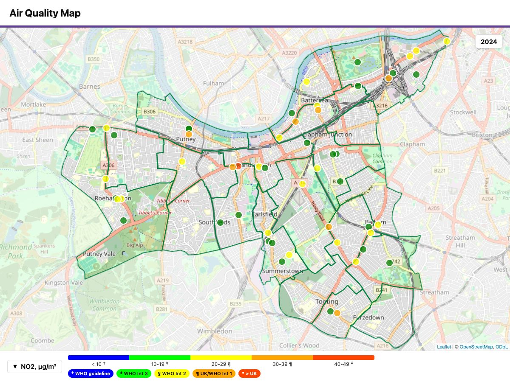

Sharing and export
sharing.RmdEvery QuickMap map is a single self-contained HTML file — all code and data inside, nothing to install for the person receiving it. That makes sharing simple: the file is the product.
1. Email it
The file in aq_maps/ attaches to an email like any
document. Sizes stay email-friendly: a typical annual map is well under
1 MB, and even a 108-step hourly animation is about 1 MB (the compact
storage format — Time and animation). The
recipient double-clicks and the map opens in their browser, fully
interactive. One dependency: an internet connection, for the background
map tiles.
2. Put it on a website
The same file uploads to any web space — no server logic needed. The pages of this manual embed QuickMap files exactly that way.
3. Export a JPG for documents
Reports and slides need still images:
library(quickmap) # load the quickmap library
quickmap(
"tubes_wandsworth.csv",
boroughs = "Wandsworth",
display_times = "2024", # one step -> one image
export_image = c(1200, 900) # JPG width x height, pixels
)
-
export_image = TRUEuses the default 1200×1200. - Text, legend, symbols and marker labels all scale with the image size — a 2400px poster export is as legible as a 700px thumbnail.
- Several selected time steps produce one JPG per step.
- The interactive HTML is written as well — the JPG is an extra, not a replacement. Wind overlays are omitted from stills.
4. Sizing for the printed page
A big export is not automatically a legible one: what matters is how wide the image is printed, not how many pixels it has. A 4000-pixel image across 190 mm of A4 is about 21 pixels per millimetre, so the map’s small text lands near 7 point — readable, but no more.
Two ways to get bigger text on paper, in order of preference:
- Print the image larger. Nothing in the file changes. The same export across A3 is twice the point size.
-
Label fewer things.
marker_labels = FALSEwith the values in a table beside the map, or labels on one layer only.
Raising map: label_scale: is the last resort — see Labels for why bigger labels collide.
See also
- Get started step 6 — export in the build-up.
- Time and animation — the compact format that keeps animations email-sized.
- Labels — label size, the plate behind them, and the banner key for reference layers.